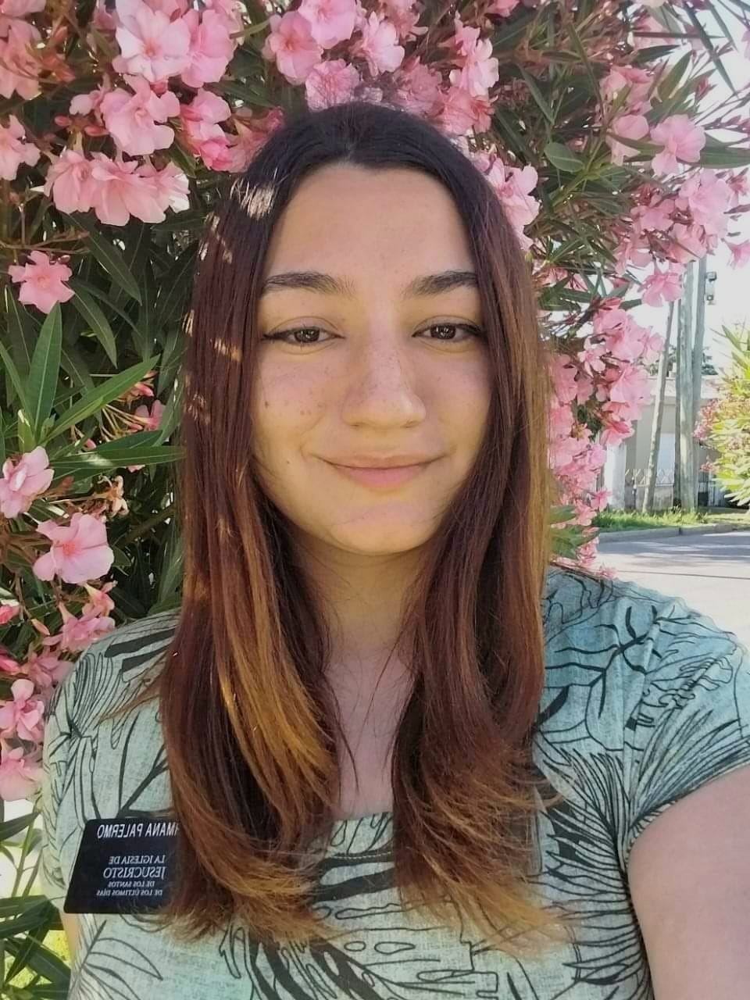

Lara Palermo | WDD 130

Hello! My name is Lara Palermo, and I'm from Cordoba Argentina. I enjoy traveling, and spending time with my
family and friends. I am studying finance and software development. I also enjoy learning new languages and
playing piano.